最近没什么事，在微博上看到国外某大牛开发出了一款3D版的NES模拟器，试玩了一下很有意思，正好FC的结构比较简单，所以也想自己动手实现一个简单的nes模拟器。关于NES模拟器相关的文章比较少，但是NES相关的核心原理都已经公布出来了，你可以从这里http://nesdev.com/找到。
系统架构
要完全模拟一个机器，我们需要对目标的架构非常熟悉，NES作为上世纪个人电脑诞生之初的产物，结构是非常简单的，并且NES在机能不足的情况下使用了很多独特的技术是其能展现出对当时来说领先的画面，实现这些技术也非常的有趣。
FC主要的结构图如下：


与传统结构的电脑相比，NES主要的不同在于它没有ROM，ROM在游戏卡带中。结构描述如下：
- ROM存在于卡带中，是只读存储器，主要用来保存游戏。
- RAM存在于卡带和CPU中，是随机访问存储器，断电后被清除。
- CPU是中央处理器。
- PPU是图像处理器。
- APU存在于定制的CPU中，用于处理音频。
- PRG ROM中保存的是游戏程序的指令，CPU会读取这些指令并执行。
- CHR ROM中保存的游戏贴图的数据，PPU会读取这些数据并显示。
- Lockout是负责验证游戏合法性的芯片。
- WRAM是某些游戏卡带附加的Work RAM，一般用来保存游戏存档，需要电池。
这篇文章我们主要讨论NES模拟器工作的原理，所以暂时不做游戏兼容性的考虑，另外因为时间有限，暂时不实现APU。
Central Processing Unit
2A03 Overview
NES采用的CPU型号是2A03，这个CPU是由上世纪广泛采用的8位CPU 6502改进而来的，两者的共同点在于：
- 指令集相同
- 都是小端(little-endian)
两者的差别主要在于：
- 2A03多了一个pAPU(pseudo-Audio Pricessing Unit)，用来处理声音。
- 2A03缺少BCD(Binary Coded Decimal)模式。
BCD模式，即用二进制来模拟十进制数，具体来说，就是用4个二进制bit表示十进制中的一位。比如123，用二进制表示为01111011,而用BCD表示为0001,00010,0011（逗号只是为了视觉上更清晰）。
CPU Memory Map

上图显示了CPU访问内存时怎样使用的总线。内存被分为三部分，卡带中的ROM，CPU中的RAM和I/O寄存器。地址总线用来传送请求的地址，控制总线用来告诉其他部件这个请求是读还是写，数据总线用来将数据读/写到请求的地址。图中的ROM是只读的并且需要通过MMC来访问，这样才能使bank switching(后面会介绍)发生。I/O寄存器用来和其他系统组件比如PPU，控制设备沟通。
2A03有16位的地址总线，即可以支持64KB的内存空间的访问从$0000到$FFFF。控制总线和数据总线是8位的。下图显示了NES在运行时的内存布局，左边是主要的段，右边是更进一步的划分。
MMC(Memory Management Chip)作为一个独立的硬件存在于卡带中。但是并不是每个游戏卡带都包含MMC，比如超级玛丽就没有MMC，不过几乎任何比超级玛丽后推出的游戏都会包含MMC。那么它究竟起到什么作用呢？简单来说，NES系统需要将游戏ROM加载到主存，早期的NES系统的主存大小确实能满足读取ROM的需求，但是不幸的是后来游戏越做越大，NES已经无法一次性地把所有ROM装载进主存。于是就用了一个妥协的设计，MMC就出现了。它的作用有点类似于现代OS中“虚拟内存”的运作方式，当NES需要加载一个ROM Bank时（bank是rom的单位，一个bank是16kb或8kb，取决于rom的类型。PRG-ROM一个bank是16kb），而这个bank当前并没有被读进主存中，这时候就会经由MMC把需要的bank读进来置换现有的一个bank。更具体说，rom会被加载到内存中$8000-$9FFF的区域，如果当前加载进的是bank 1，那么$8000就会是bank 1的第一个字节；如果当前加载进的是bank F，那么$8000就会是bank F的第一个字节。
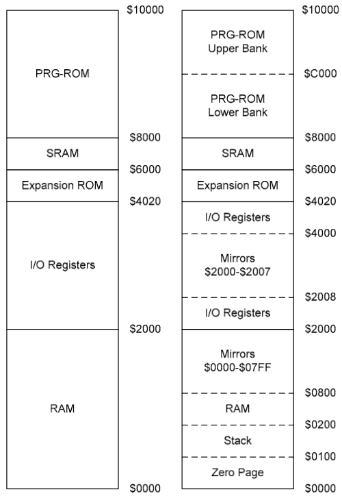
最底下的$0000-$00FF被称为Zero Page，这是内存中的第一个Page，特点是它的地址只用一个字节就能表示，所以如果对这个区域的内存进行读写的话，从效率出发，就不需要16位的地址，而只需要8位的地址，这样指令长度中的操作数部分就能得到压缩，提高效率。所以它有自己单独的寻址模式和指令系统，具体的会在后面寻址模式部分细讲。
NES的内存中，有一个特点叫做mirrored memory（在上一篇文章中已经提到过了），比如从$0000到$07FF的空间会被镜像地复制三份放到从$0800-$1FFF当中去。这意味着，对于任何写入$0000的数据，它应当被同时写到$0800, $1000以及$1800中。而$2000-$2007这8个字节的I/O寄存器也会被复制N份填满$2008到$3FFF的地方。
$6000-$7FFF的空间用于存放SRAM(Save RAM)，它用于访问卡带中的RAM区域，在保存游戏时用。
从$8000往上存着卡带的PRG-ROM(Program ROM)。游戏卡带中的PRG-ROM的大小用bank(16kb)去衡量。如果游戏仅有1个bank大小，它会被同时复制到$8000和$C000.这是为了保证中断处理函数向量表（类似现代os里的idt，后面还会讲到）能被读取到正确的地方。如果游戏有2个bank大小，它的第一个bank会复制到$8000,而第二个bank会被复制到$C000。对于大小超过2个bank的游戏ROM,就需要根据类型具体对待了。如果你稍微看过模拟器源代码的话，应该会发现很多mapper文件，针对的就是各种不同类型的ROM的mapping情况。常见的mapper的运作方式在NESDoc中可以找到。
Registers
和其他相似的处理器相比，6502的寄存器较少，只有3个特殊功能寄存器：PC寄存器(Program Counter)，SP寄存器(Stack Pointer)，P寄存器(Processor Status)。还有3个通用寄存器，A寄存器(Accumulator)，X寄存器(Index Register)，Y寄存器(Index Register)，这三个寄存器主要用来保存数据或者控制信息。
Program Conuter(PC)
PC寄存器是一个16位的寄存器，用来保存下一条将要被执行的指令的地址。当指令被执行后，PC寄存器中的值就会更新，通常移动到下一条顺序指令。它的值也有可能被跳转，分支，中断等改变。
Stack Pointer(SP)
栈在内存中的地址是$0100-$01FF共256字节。SP寄存器是一个8位的寄存器，提供一个从$0100开始的偏移值。栈是自上而下增长的，所以当一个字节被压栈，SP寄存器递减当一个字节被弹栈时SP寄存器递增。因为没有stack overflow的检测，所以SP寄存器会在$00和$FF循环。
Accumulator (A)
A寄存器是一个8位的寄存器，用来保存算数运算和逻辑运算的结果，也可以被用来保存从内存中读取到的值。
Index Register X (X)
X寄存器是一个8位的寄存器，通常用作计数器或者在一些寻址模式下作为地址偏移量(offset)。X寄存器也可以被用来保存从内存中检索的值或者get/setSP寄存器的值。
Index Register Y (Y)
Y寄存器也是一个8位的寄存器，作用和X寄存器类似，用来作为计数器和偏移值。和X寄存器不同的是不能影响SP寄存器的值。
Processor Status (P)
P寄存器的每一位都是一个标志位，这些标志位会在指令被执行后相应的设置或者清除。
- Carry Flag(C)：进位标志
当出现了上溢出(overflow)和下溢出(underflow)时，C置为1.
上溢出的例子：例如两个16位数相加，会先计算低8位。比如这里两个数的低8位之和为256，超过了255，由于在最高位发生了进位，C置为1.于是在计算高8位时，可以把C中的1作为低8位进上来的位。也就是说，通过C，可以进行超过8位的运算，计算能力被扩展了。
也可以通过SEC指令(置为1)和CLC指令（清除为0）两条指令去改写C。SEC - Set C; CLC - Clear C.
- Zero Flag(Z)：零标志
如果前一条指令产生的结果为0，比如128-128就会使得它置1，而128-127就不会。
- Interrupt Disable(I):中断禁止标志
此标志可以让系统忽略IRQs发起的中断。可以通过SEI指令去开启这个屏蔽（置为1），或者CLI去关闭屏蔽（清除为0）。
- Decimal Mode(D):
这个标志本来可以使6502进入Decimal Mode(前面介绍过了)，不过由于2A03不支持BCD模式，所以尽管这一位还可以被设置，但是并不会产生任何影响。可以通过SED指令去置1，或者CLD指令去清0.
- Break Command(B):
这个标志位的意义在于IRQ中断可以由软件引起（执行BRK指令）也可以由外部硬件通过IRQ线引起。那么如何区分这两种中断类型呢？就是通过这一位。具体来说，当中断是由BRK指令产生时，这一位会被置为1；而如果它是被外部硬件中断时，这一位设为0.
- Overflow Flag(V):溢出标志
用于标志两个补码(two’s complement)表示的数在运算时产生了溢出，导致了非法的结果。比如两个正数求和产生了负数，或者两个负数求和产生了正数。一个例子，64+64，和应当为正数128，但是它用二进制表示为10000000,按照补码规则，为-128.当产生这样不正确的结果时，V置为1.
- Negative Flag(N):负数标志（在有些文档中被简写为S - for Sign）
bit7(最高位)表示符号位，如果它是1的话（表示当前数是负数），N置为1。
这些标志按上面的顺序显示在下图中，P寄存器的第5个比特位没有被使用。
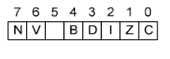
Interrupts
中断能够暂停标准顺序执行的指令，让处理器处理中断。中断通常有硬件产生，也可以由软件产生。NES有三中不同类型的中断：NMI、IRQ以及Reset。当中断产生时，会跳转到不同的中断响应函数中。中断和中断响应函数的对应关系保存在中断向量表中(Vector table)，这个表位于内存的$FFFA-$FFFF中。中断向量表一共6个字节，平均分配给3种中断，每个中断两个字节，刚好可以存储一个16位的函数入口地址。
当一个中断发生时，系统会执行如下的操作：
1.意识到中断发生
2.完成当前指令
3.保存现场（把PC、 P两个寄存器压栈）
4.设置中断屏蔽标志(I)防止新的中断进来
5.从中断向量表中找到当前中断类型对应的中断处理函数地址，跳往那里
6.执行完中断处理函数
7.通过RTI指令(return from interrupt)返回，并且恢复现场（PC, P出栈）
8.继续向下执行原代码
IRQs，可屏蔽中断,可以通过中断屏蔽标志(I)去忽略该类型中断。IRQ可以在两种情况下产生，一是软件通过执行BRK(Break)指令来产生；或者硬件通过IRQ线产生外部中断。IRQ中断的处理函数的地址存于vector table中的$FFFE-$FFFF。
NMI(Non-Maskable Interrupt)，不可屏蔽中断。在PPU中，当V-Blank出现在每一帧的最后时，就会产生NMI中断。这个中断不会被中断屏蔽标志(I)所屏蔽，不过可以被PPU的control register1（$2000）所屏蔽。它的频率为60次/秒(在NTSC上)或者50次/秒（在PAL上）。NMI的中断处理函数的地址存于vector table中的$FFFA-$FFFB。它的处理过程如下：
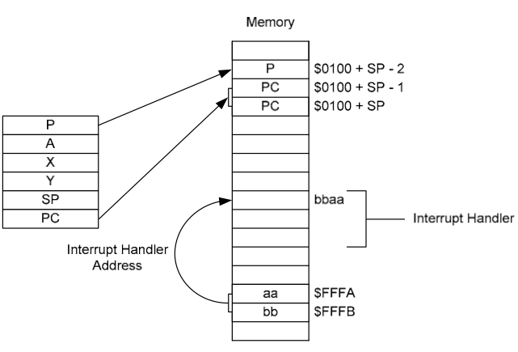
其中“$0100+”为栈的部分(PC由于是双字节，所以图中横跨两个unit)，$FFFA-$FFFB保存着中断响应函数的入口地址，同样是双字节。Reset，当系统刚启动以及用户按下Reset按钮时触发的中断。Reset的中断处理函数的入口存于vector table中的$FFFC-$FFFD。
中断的优先级（从高到低）：Reset -> NMI -> IRQs
从中断发生到中断函数被执行之间被定义为有7个CPU cycle。
大部分中断是通过RTI函数返回。不过也有一些例外，例如SquareSoft的“Final Fantasy 1”（最终幻想1）是通过手动控制栈指针，然后执行RTS指令。
Addressing Modes
6502拥有多种不同的寻址模式，提供了不同的访问内存的方法。也有的寻址模式不是操作内存而是寄存器。6502提供了13中寻址模式，一些指令能使用多种寻址模式。
寻址模式 简单的讲就是寻找操作数地址的方式。比如某个指令时把某个数取出来++以后再存回某个地方去。不过这个数究竟从哪里取存在很多种可能，比如可能是从某个特定的寄存器取出（这种情况下不需要给出额外的操作数），或者是由操作数直接给出对应的内存地址，它可能是Zero Page的区域(单字节操作数)又或者是其它区域(双字节操作数)，又或者它根本不是直接给出，而是要把操作数中的地址和某个寄存器里的值求和以后才能得到最终要操作的地址等等。以上的种种情况，就对应了不同的寻址模式。因此，同样一个功能的操作(在这个例子中是取出、++、然后储存)由于可以搭配上不同的寻址模式，就变成了不同的指令。
Zreo Page(指令长度：双字节)
Zero Page模式存在的意义就是为了减少指令的长度，提高效率。使用Zero Page模式，操作数只有一个字节，地址限制在$0000-$00FF，也就是Zero Page区域。下面是一个AND $12在Zero Page模式下的例子。
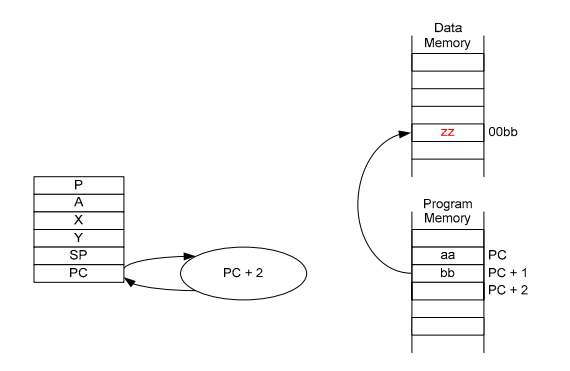Indexed Zero Page(指令长度：双字节)
Indexed Zero Page模式和Zero Page模式相似，区别在于求地址时，会将传入的操作数和寄存器中的值相加。有两种Indexed Zero Page模式：
- Zero Page, X -将操作数和X寄存器中的值相加。这是最常见的Indexed Zero Page模式。比如AND $12，X。
- Zero Page, Y -将操作数和Y寄存器中的值相加。这种模式只能使用LDX(Load X Register)和STX(Store X Register)。比如LDX $12，Y。
Indexed Zero Page模式的地址永远在Zero Page区域，比如操作数是$FF而X寄存器中的值是$01，那么被操作数据的地址将会是$0000而不是$01000(如果地址超过了$FF，只取后面一个字节)。
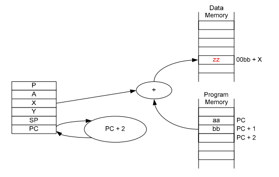
Absolute(指令长度：三字节)
在Absolute模式中，地址作为操作数是直接给出的。于Zero Page模式相比，它给出的地址是16位完整的地址。例如AND $1234。
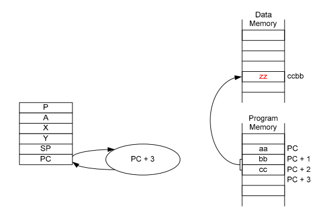Indexed Absolute(指令长度：三字节)
Indexed Absolute模式和Absolute的关系就像Zero Page和Indexed Zero Page的关系一样。同样也有两种形式：
- Absolute，X -将操作数和X寄存器中的值相加。例如：AND $1234，X。
- Absolute，Y -将操作数和Y寄存器中的值相加。例如：AND $1234，Y。
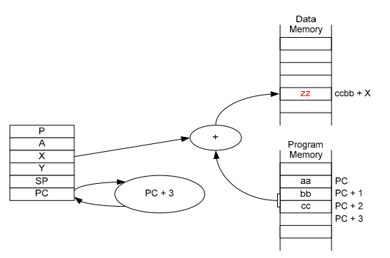
Indirect(指令长度：三字节)
Indirect模式需要两个操作数形成一个16位的地址。比如如果操作数是bb和cc，并且地址ccbb保存的是xx而ccbb + 1保存的是yy，那么真实的地址就是yyxx(6502是小端)。在6502中，只有JMP(Jump)指令使用这种模式，比如JMP $1234。下图显示了一般形式的间接寻址。
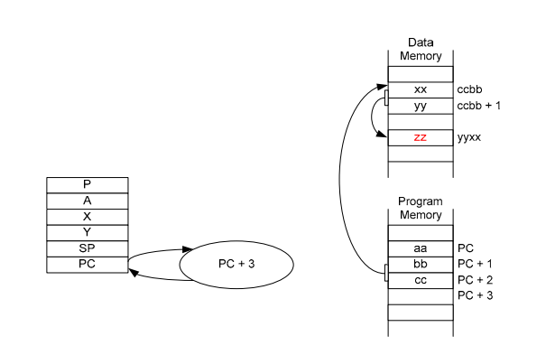Implied(指令长度：单字节)
这种寻址模式不需要内存中的操作数，因为指令本身已经包含了。比如：
TAX -把寄存器A的值赋给寄存器X
CLC -清除进位标志Relative(指令长度：双字节)
Relative模式用于分支语句。一个单字节的值会被加到PC上。注意，这个单字节的值是有符号的，它的取值范围为[-128, 127]。所以说PC和这个单字节的值相加后，可能比原来大也可能比原来小。例如：BEQ $A7(A7十进制表示为-39)。这条语句会先查看ZERO标志位，如果ZERO标志位为0，表示不需要做加减，正常继续往下走，那么PC会顺序执行下一条语句；而ZERO如果不为0，比如在这个例子中，PC就会减去十进制的39。
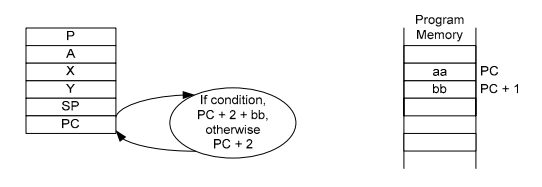Indexed Indirect(指令长度：双字节)
Indexed Indirect(也叫pre-Indexed)模式需要一个字节的操作数，然后将X寄存器中的值加上这个操作数(如果有溢出取溢出的部分)，得到一个地址，需要操作的数据就是这个地址中保存的地址中的值。这样说有点绕口，举一个例子：如果操作数是bb，而$00bb保存的是xx并且$00bb + 1保存的是yy，那么就会读取yyxx中保存的值。
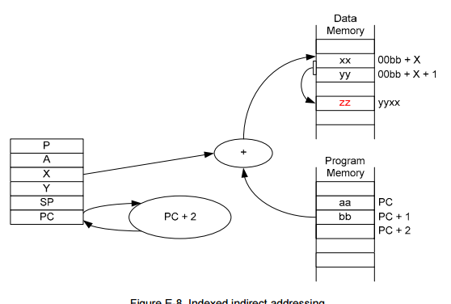
*Indirect Indexed(指令长度：双字节)
Indirect Indexed(也叫post-Indexed)需要一个zero page的地址作为操作数，然后将这个地址中的值与Y寄存器中的值相加，得到一个新的地址。比如操作数是bb，假设$00bb保存的是xx并且$00bb + 1保存的是yy，那么需要的数据就在yyxx中。
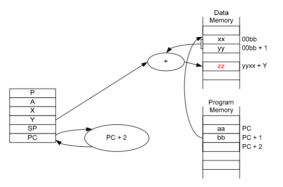
Instructions
6502拥有8位的指令长度，理论上可以支持2^8=256条指令。但是6502事实上只有56中不同功能的指令，这些指令在不同的寻址模式下又有不同的版本，所以6502一共支持151条opcode。关于这些指令的细节，可以参考http://e-tradition.net/bytes/6502/6502_instruction_set.html
Picture Processing Unit
因为CPU机能有限，NES使用了一个独立的图像处理器(也就是2D的显卡)，按照PPU的性能，显示彩色几乎没有可能，但是任天堂使用了很多独特的技术，使得NES能够显示彩色的画面，实现这一部分是最复杂但是也最有趣的。
2C02 Overview
NES的PPU的型号是2C02，这也是为NES提供CPU的厂商即Ricoh制造的。大多数PPU的寄存器都位于CPU内存中I/O节的$2000-$2007和$4014。另外还有一些寄存器用于屏幕滚动。
PPU Memory Map
PPU拥有自己的内存，被称为VRAM(Vide RAM)。和CPU一样，PPU也能访问64KB的内存空间，虽然它只有16KB大的物理RAM。下图是PPU的内存映射图，同样，左边是简化版本右边是详细的划分。由于物理和逻辑地址空间的不同，高于$3FFF的地址都会wrapped around，使逻辑内存地址为$4000-$FFFF实际上是$0000-$3FFF的镜像。
通过CPU内存空间中的$2006和$2007寄存器能够读/写PPU的内存。这通常在一帧结束后的V-Blank阶段完成。
因为PPU的内存使用的是16位的地址，但是I/O寄存器只有8位，所以需要向$2006写两次才能确定需要的地址。然后就可以从$2007读/写数据。在每一次向$2007写数据后，地址会根据$2000的第二个bit位增加1或者32。第一次从$2007读的数据是无效的，真实的数据会被缓冲直到下一次读才会返回。这不适用于调色板。
PPU也有独立的256的内存区域，叫SPR-RAM(Sprite RAM)，用来存储精灵属性。精灵本身可以从pattern tables中找到。
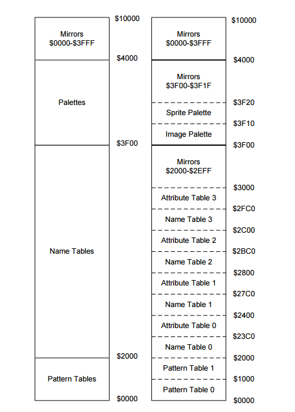
PPU Registers
CPU通过在内存中映射的I/O寄存器来和其他设备交流。由PPU使用的寄存器位于主内存的$2000-$2007，还有一个用来直接访问内存的额外寄存器在$4014。记住$2000-$2007这8个字节会被复制N份填满$2008-$3FFF的区域。所有寄存器的总结可以参考NESDoc的附录B。
CPU能够通过向$2000和$2001也就是PPU的寄存器1和寄存器2写数据来控制PPU。这两个寄存器都只能被写。$2000的第7位可以用来禁用NMI。记住这种类型的中断会在V-Blank发生时产生并且不会被Status Register的禁用中断标志影响。清除这个bit能够阻止NMI在V-Blank时产生。因为NES同时支持8x8和8x16的精灵，设置$2000的第5位可以选择到8x16的精灵。每一次I/O后，要从PPU内存中读/写的地址都会增加，增加的值是有$2000的第2位决定的。如果这一位是clear的，地址会增加1(水平)，否则增加32(垂直)。可以通过clear$2001的第3位来隐藏背景，相似的，也可以clear第4位来隐藏精灵。
PPU的Status Register在$2002的位置，并且是只读的，这个寄存器用来报告PPU的状态给CPU。CPU会经常访问这个位置来查看PPU的状态。PPU会设置第7位用来表明V-Blank正在发生。第6位和第7位关系到精灵，后面会详细描述。第4位用来指示PPU是否接受向VRAM写入，如果这一位是clear的那么写入将会被忽略。当从$2002读数据时，第7位会被重置为0，$2005和$2006也会这样。
Direct Memory Access
通过处理器传输大量数据是低效的，比如从CPU内存传输数据到精灵内存，会采用以下步骤：
- 将请求的SPR-RAM地址加载进CPU。
- 将请求的SPR-RAM地址写到$2003。
- 将需要写的字节加载到CPU。
- 将字节写到$2004。
当要填满SPR-RAM时上面使用的方法需要重复256次。直接内存访问(DMA)是一种允许更有效的从CPU复制数据到SPR-RAM的技术，通过DMA，填充SPR-RAM的内存只需要使用一条指令，通过$4014一次写入。在CPU内存中的起始地址是由写入的操作数乘$100指定的，这256字节的起始地址是直接复制到SPR-RAM，没有其他CPU的操作。当DMA发生时，内存的总线在使用中，防止CPU访问内存，并且防止它执行其他的指令。这被称为周期窃取，CPU不得不等待直到DAM传输结束。在NES上，DMA会使用相当于512个周期(约4.5次扫描)，之后CPU才能够恢复。这大大低于通过CPU手动复制。
Colour Palette
NES拥有一个包含52种颜色的调色板，事实上能够容纳64种，但是不是所有的都能够在给定的时间显示。NES使用了两个调色板，每个都有16项，包括图像调色板($3F00-$3F0F)和精灵调色板($3F10-$3F1F)。图像调色板显示了当前背景title可用的颜色，精灵调色板显示了精灵可用的颜色。这些调色板没有保存任何真实的颜色而是系统调色板的索引。因为只需要64个独特的值，第6，7位可以忽略。
位于调色板$3F00的项用来设置背景颜色和透明性。调色板每4字节都是$3F04的副本，因此$3F04，$3F08，$3F0C，$3F10，$3F14，$3F14，$3F18和$3F1C都是$3F00的副本并且所有调色板中的颜色数量是13而不是16。在任何时间屏幕上显示的颜色的数量都是52中颜色中的25种。这两个调色板也被复制到$3F20-$3FFF。NES的调色板如下：
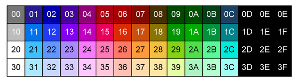
Pattern Tables
NES有两个图案表，分别位于$0000和$1000。图案表中保存了8x8像素的title用来在屏幕上绘制。许多游戏将图案表保存在卡带上CHR-ROM，当然也有一些没有CHR-ROM的游戏会将图案表保存在RAM中然后再运行时填充。图案表至少会保存4位中的2位来确定该像素使用的图像或精灵调色板的哪项，比如00b是调色板中的第0项，01b是第一项，10b是第2项，11b是第三项。
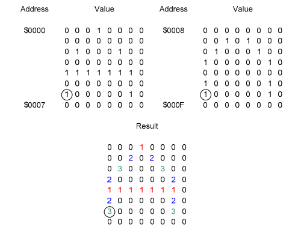
上图显示了图案表是如何工作的，最后的结果是显示’A’字符，如在底部的图显示的一样。字符是通过从左上角的每一个字节的低两位构成的图形和右上角属性表(attribute table)的高两位合成达到显示彩色图形的效果(图中的显示的颜色并不是NES调色板中值)。
因为每个title的高两位都是有Attribute Table指定的，所以这个title区域内最多只能显示由Pattern Table低两位决定的四种颜色。
Name Tables / Attribute Tables
NES使用马赛克矩阵进行图形显示，这种矩阵就叫名称表，它指向的title保存在图案表中。名称表有32x20个title，每个title有8x8像素，整个名称表有256x240个像素。每一个名称表都有一个相关的属性表，属性表保存的是title的颜色的高两位。属性表的每个字节都表示了一个4x4的title组，所以一个属性表示一个8x8的title组。每一个4x4的title组都被进一步划分成4个2x2的正方形，如下图所示。8x8个title被编号为$0-$F，字节的布局是33221100，其中每两位用于指定正方形最显著的两种颜色。
NES只有2KB来保存名称表和属性表，也允许保存两个名称表或属性表。但是它能够处理4个名称表或属性表，因为有镜像的存在。一共有4种镜像，他们的描述如下，这里使用缩写来表示逻辑名称表(能够被定位到的)，L1表示$2000，L2表示$2400，L3表示$2800，L4表示$2C00。
- 水平镜像：L1和L2是第一个物理名称表，L3和L4是第二个。如下图所示：
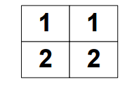 - 垂直镜像：L1和L3是第一个物理名称表，L2和L4是第二个。如下图所示：
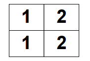 - 单屏镜像：四个逻辑名称表都是同一个物理名称表，如下图所示：
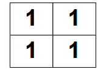 - 四屏镜像：使用卡带中额外的2KB RAM来让逻辑名称表映射到单独的物理名称表，如下图所示：
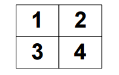
Sprites
精灵(Sprites)就是显示在屏幕上的角色，精灵可以是8x8像素或者是8x16像素的。大多数角色都是有多个精灵组合的。精灵的数据保存在图案表中，精灵的属性保存在SPR-RAM中。最多能有64个精灵，每一个都使用SPR-RAM中的4个字节。这些字节的用途如下：
- 字节0：保存的是精灵的左上部分的y坐标减1
- 字节1：图案表中精灵的索引号
- 字节2：保存精灵的属性：
- 第0-1位：保存精灵颜色最重要的两位
- 第5位：指示精灵是否优先于背景
- 第6位：指示是否水平反转精灵
- 第7位：指示是否垂直翻转精灵
基于不同的索引号，8x16的精灵使用不同的图案表。如果该索引号不在第一个图案表中($0000)，就是在第二个图案表中($1000)。
需要先向$2003读/写请求的地址，然后从$2004读/写精灵的数据。或者可以通过一次DMA(向$4014写)写入全部的SPR-RAM。
根据精灵在SPR-RAM中的位置，它们有不同的优先权。第一个精灵(称为Sprite 0)拥有较高的优先权，在每次扫描线时，低优先级的精灵会先绘制，确保高优先级的精灵在他们上面(更准确的来说是前面)，每次扫描线只能允许最多8个精灵，当达到8个后，系统会设置$2002 I/O寄存器的第5位。
一种用于滚动的常用技术包括了确定Sprite 0是否和一个不透明的背景像素重叠。如果系统正在绘制Sprite 0，并且任何非透明的背景像素在同样的位置，那么系统会设置Sprite 0的hit flag($2002的第6位)，当然如果背景title只包含了透明的像素，那么Sprite 0的hit flag不会被设置。下图显示了Sprite 0的碰撞检测。左边的图显示的是背景，中间的图显示的是精灵，右边的图显示的是两者的组合。颜色0表示透明度，被圈中的像素表示了Sprite 0的hit flag会被设置。
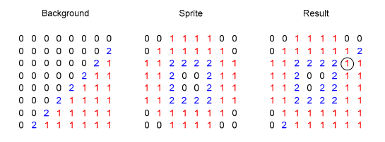
角色通常比单个的精灵块大，所以通常是多个精灵块的组合。比如下图显示了马里奥这个角色是如何通过8个8x8的精灵块组合的。
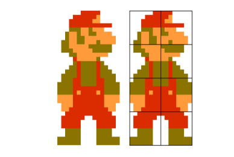
Scrolling
背景能够水平或者垂直的滚动。滚动利用了单独的名称表。在任何时间，屏幕上的背景都是单独的名称表或者两个名称表的组合。下图显示了两个名称表的组合(当然另外两个是镜像)，第二张图显示了包括精灵在内的合成图像。
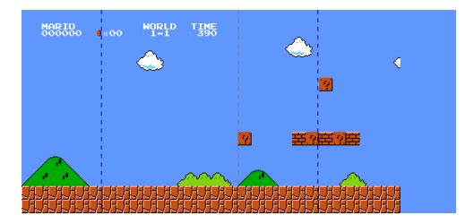
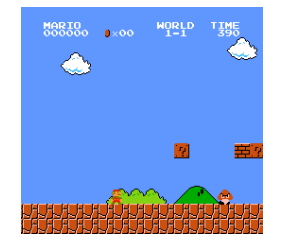
最终的图像是从第一个名称表延伸到第二个。第一张图中的灰色线条就是两个名称表的分割，两根蓝色线条中间的区域是屏幕上显示的内容。屏幕左边的位置是已经被显示过了并且正在滚动出屏幕的内容，在屏幕右边的内容是系统正在填充的前面的名称表，将会随着马里奥的移动显示在屏幕上。通过第一张图中被切掉一半的云可以看出，不是所有的区域都已经被系统填充。一些游戏只允许向一个方向移动，有的允许同时向两个方向移动。Nintendo的描述如下：
“PPU一次能够显示960个字符，但是实际上能存储两倍的量。在单向滚动时，新的角色不断取代滚动到后面的角色。这就是像超级马里奥一样是单向滚动的，在银河战士中，能够朝两个方向滚动，新的角色也能够在滚动的方向添加进来。”
很明显在屏幕中的状态条区域不会像其他区域一样滚动，是完全驻留在第一个名称表中。这是马里奥游戏中典型的状态信息。通过使用Sprite 0的hit flag，在超级马里奥3中通过产生一个IRQ。
水平滚动和垂直滚动的概览如下图所示。A在这里表示的由$2000的0-1位决定的名称表，B是之后的名称表(取决于使用的镜像技术)。这种方式不适用于那些同时允许垂直和水平滚动的游戏。背景图像会跨越名称表，如下面第二张图显示的那样。
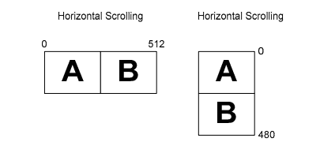
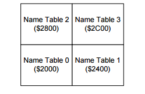
屏幕滚动的工作方式的总结如下。系统会维护一个16位的地址寄存器，它的值由$2006设置。这个寄存器的布局如下：
- 第0-11位：保存了名称表到$2000的偏移地址。第0-4位是用作x方向的滚动，当扫描线绘制时增加，当增加到31时，会循环到0并且第10位的状态会切换。第5-9位用作y方向的滚动在扫描线绘制完成时增加，当增加到29时，会循环到0并且第11位的状态会切换。如果通过写$2007将它的值设置到29之上，那么当它达到31时会循环到0，但是第11位不会受影响。
- 第12-14；是title的y偏移。
X滚动和Y滚动表明了title的数量，横方向上一共允许32个titles(256像素)，纵方向上允许30个titles(240像素)，所以一共960个像素。还有第二种方式，临时VRAM地址寄存器也是16位长，一共有3位表示title的X偏移。在帧被绘制完后，会通过向寄存器写入新的数据来更新。
Television Standards
NES没有自带显示器，需要通过连接电视才能显示游戏。对于两种不同的电视制式，产生了两种不同的系统版本，NTSC和PAL。NTSC(National Television Standards Committee)是北美的标准制式，大多数南美和一部分亚洲地方也使用这种制式。PAL(Phaase Alternating Line)是在欧洲，大多数亚洲，非洲和澳大利亚使用的制式。下表显示了这两种版本的不同点：
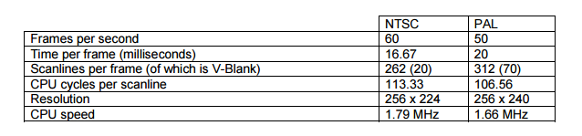
显示在电视屏幕上的图像是由一个高速电子流在屏幕上移动产生的，从左至右绘制每个像素。一行像素被称为扫描线(scanline)。在一个扫描线结束后，电子束会重新移动的下一行的左边开始新的绘制，在移动的这段时间被称为Horizontal Blank period(H-Blank)。
在绘制玩整个屏幕的图像后，电子束会重新回到屏幕的左上角准备绘制下一帧。这段移动的时间被称为Vertical Blank period(VBlank)，当进入VBlank是，PPU通过设置I/O寄存器$2002的第7位来标志进入了VBlank。在CPU下一次从$2002读取时这个比特位会被重置。在NES的NTSC版本上，屏幕上有240行扫描线(虽然顶部和底部的8条线被切断了)并且会花费另外约CPU周期的3个扫描线的时间来进入V-Blank。在下一帧绘制前，V-Blank会进一步花费20个扫描线的时间。
编写一个简单的NES模拟器的最基础的知识差不多就是以上这些了，当然如果编写一个完整的模拟器，还需要对卡带，APU，控制设备等硬件的了解，但是这里因为时间有限，我们可以先编写一个简单可运行的模拟器，而对于兼容性和音频这些东西在以后再不断完善。
代码实现
理论上来说可以使用任何语言来实现一个模拟器，网上很多版本都是用JS写的，这里我使用我比较熟悉的C++，图形库使用Opengl。
实现CPU
首先我们定义一个CPU类，根据上面的知识，我们使用WORD和BYTE来表示寄存器，使用数组来表示内存。1
2
3
4
5
6
7
8
9
10
11
12
13
14
15
16
17
18
19
20
21
22
23
24
25
26
27
28
29
30
31
32class CCpu
{
public:
CCpu(void);
~CCpu(void);
// 初始化CPU
void Init(CNesFile* File,CPpu* ppu);
//以下几个bool类型的变量代表JoyPad1按键状态
bool isA,isB,isSelect,isStart,isUp,isDown,isLeft,isRight;
private:
CNesFile* NesFile;
CPpu* Ppu;
//六个CPU寄存器
WORD RegPC;
BYTE RegSP;
BYTE RegA,RegX,RegY;
BYTE RegP;
//目前是在对Joypad1(0x4016)进行第几次读
int Joypad1Count;
//CPU内存
BYTE Memory[0x800];
BYTE SRAM[0x2000];
public:
// 复位CPU
void Reset(void);
// 模拟一条CPU指令
bool emulate(void);
void VBlank(void);
void EndVBlank(void);
}
CPU的emulate函数用来执行CPU的指令。这个函数是工作量最大但是复杂度不是很大的工作，根据6502的指令文档，我们用一个switch结构来执行各个指令。1
2
3
4
5
6
7
8
9
10
11
12
13
14
15
16
17
18
19
20
21
22
23
24
25
26
27
28
29
30
31
32bool CCpu::emulate(void)
{
BYTE opcode=ReadByte(RegPC++);
WORD WordTemp;
BYTE ByteTemp,ByteTemp2;
switch(opcode)
{
//ADC Immediate
case 0x69:
ByteTemp=ReadByte(RegPC++);
WordTemp=RegA+ByteTemp+(RegP&C_FLAG);
TestFlag(WordTemp>0xFF,C_FLAG);
TestFlag((~(RegA^ByteTemp))&(RegA^WordTemp)&0x80,V_FLAG);
RegA=(BYTE)WordTemp;
TestFlag(RegA==0,Z_FLAG);
TestFlag(RegA&0x80,N_FLAG);
break;
//ADC Zero Page
case 0x65:
ByteTemp=ReadByte(RegPC++);
ByteTemp=ReadByte(ByteTemp);
WordTemp=RegA+ByteTemp+(RegP&C_FLAG);
TestFlag(WordTemp>0xFF,C_FLAG);
TestFlag((~(RegA^ByteTemp))&(RegA^WordTemp)&0x80,V_FLAG);
RegA=(BYTE)WordTemp;
TestFlag(RegA==0,Z_FLAG);
TestFlag(RegA&0x80,N_FLAG);
break;
//ADC Zero Page,X
...
}
}
根据CPU的内存分布图，我们需要对CPU的读写内存进行模拟，比如下面的代码是从CPU内存读数据的函数。1
2
3
4
5
6
7
8
9
10
11
12
13
14
15
16
17
18
19
20
21
22
23
24
25
26
27
28
29
30
31
32
33
34
35
36
37
38
39
40
41
42
43
44
45
46
47
48
49
50
51
52
53
54
55
56
57
58
59
60
61
62
63
64
65
66
67
68
69
70
71
72
73
74
75
76BYTE ReadByte(WORD Address)
{
//如果是直接读取的RAM
if(Address<0x2000)
return Memory[Address%0x800];
if(Address>=0x8000)
{
if(NesFile->GetPrgRomNum()==1)
return NesFile->GetPrgRom(0)[(Address-0x8000)%0x4000];
else if(NesFile->GetPrgRomNum()==2)
return NesFile->GetPrgRom(0)[Address-0x8000];
}
if(Address>=0x6000)
{
return SRAM[Address-0x6000];
}
if(Address<0x4020)
{
if(Address<0x4000)
{
BYTE Result;
switch((Address-0x2000)%8)
{
//如果是PPU Status Register
case 2:
Result=Ppu->Status;
Ppu->Status&=~PPU_VBLANK;
return Result;
//如果是VRAM I/O Register
case 7:
Result=Ppu->IO;
Ppu->IO=Ppu->ReadByte(Ppu->ActualAddress2);
if(Ppu->Control1&INC32)
Ppu->ActualAddress2+=32;
else
Ppu->ActualAddress2++;
return Result;
}
}
else
{
switch(Address)
{
case 0x4015:
return 0;
case 0x4016:
++Joypad1Count;
switch(Joypad1Count)
{
case 1:
return isA?1:0;
case 2:
return isB?1:0;
case 3:
return isSelect?1:0;
case 4:
return isStart?0x83:0;
case 5:
return isUp?1:0;
case 6:
return isDown?1:0;
case 7:
return isLeft?1:0;
case 8:
return isRight?1:0;
}
case 0x4017:
return 0;
}
}
}
std::cout<<"ROM进行了非法访问。"<<std::endl;
return 0;
}
实现PPU
PPU的定义和CPU类似，比较复杂的是绘制画面的函数。1
2
3
4
5
6
7
8
9
10
11
12
13
14
15
16
17
18
19
20
21
22
23
24
25
26
27
28
29
30
31
32
33class CPpu
{
friend class CCpu;
public:
CPpu(void);
~CPpu(void);
void Init(CNesFile* File);
private:
CNesFile* NesFile;
WORD ActualAddress2;
//寄存器
BYTE Control1,Control2;
BYTE Status;
BYTE SPRAddress;
BYTE Address1,IO;
bool IsFirstAssign;
BYTE BKx,BKy;
//调色板
BYTE Palette[0x20];
DWORD ColorPalette[0x40];
//名字表
BYTE NameTable1[0x400],NameTable2[0x400];
//精灵
BYTE SprRam[0x100];
public:
void Draw(BYTE* pData,WORD pitch);
bool Draw8x8Sprite(WORD base,BYTE* pData,WORD pitch,BYTE x,BYTE y,BYTE Index,BYTE Attribute);
bool DrawSprite(BYTE* pData,WORD pitch,BYTE x,BYTE y,BYTE Index,BYTE Attribute);
void DrawNameTable(BYTE* pData,WORD pitch,BYTE Index, int x, int y);
};
绘制精灵的函数：1
2
3
4
5
6
7
8
9
10
11
12
13
14
15
16
17
18
19
20
21
22
23
24
25
26
27
28
29
30
31
32
33
34
35
36
37
38
39
40
41
42
43
44
45
46
47
48
49
50
51bool CPpu::Draw8x8Sprite(WORD base,BYTE* pData,WORD pitch,BYTE x,BYTE y,BYTE Index,BYTE Attribute)
{
bool Result=false;
for(int m=0;m<8;++m)
for(int n=0;n<8;++n)
{
BYTE bit1,bit2;
bit1=(NesFile->GetChrRom(0)[base+Index*16+m]>>(7-n))&0x1;
if(n!=7)
bit2=(NesFile->GetChrRom(0)[base+Index*16+8+m]>>(6-n))&0x2;
else
bit2=(NesFile->GetChrRom(0)[base+Index*16+8+m]<<1)&0x2;
BYTE PaletteIndex=(bit1|bit2|((Attribute<<2)&0xc))&0x0f;
if(PaletteIndex%4!=0)
{
DWORD* dest;
if((Attribute&HFLIP)&&(Attribute&VFLIP))
{
if(y+8-m<0||y+8-m>=240||x+8-n<0||x+8-n>=256)
continue;
dest=(DWORD*)(pData+(y+8-m)*pitch+(x+8-n)*4);
}
else if(Attribute&HFLIP)
{
if(y+m<0||y+m>=240||x+8-n<0||x+8-n>=256)
continue;
dest=(DWORD*)(pData+(y+m)*pitch+(x+8-n)*4);
}
else if(Attribute&VFLIP)
{
if(y+8-m<0||y+8-m>=240||x+n<0||x+n>=256)
continue;
dest=(DWORD*)(pData+(y+8-m)*pitch+(x+n)*4);
}
else
{
if(y+m<0||y+m>=240||x+n<0||x+n>=256)
continue;
dest=(DWORD*)(pData+(y+m)*pitch+(x+n)*4);
}
if(*dest!=ColorPalette[ReadByte(0x3f00)&0x3f])
Result=true;
if(Control2&SHOWSPRITE)
*dest=ColorPalette[ReadByte(0x3f10+PaletteIndex)&0x3f];
}
}
return Result;
}
最后我们加载超级玛丽的ROM，就可以看见熟悉的画面了。